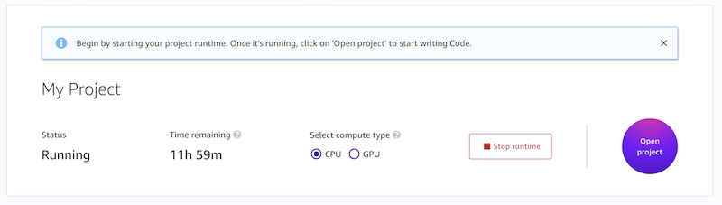
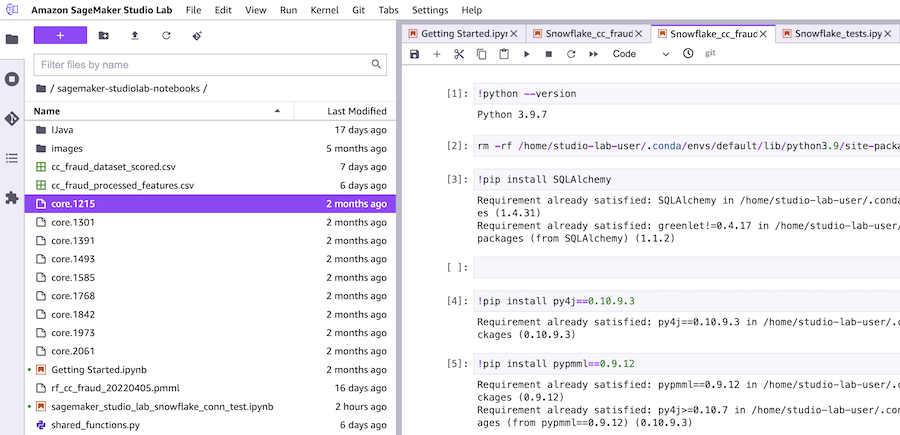

Detecting Credit Card Fraud with Snowflake, Snowpark, and Amazon SageMaker Studio Lab
Part 3 of 5: Connecting Amazon SageMaker Studio Lab to Snowflake
Author: Josh Patterson
Date: zzzzzzz xxth, 2022
Other entries in this series:
- Part 1: Loading the Credit Card Transaction Data Into Snowflake
- Part 2: Scalable Feature Engineering with Snowpark
- Part 3: Connecting Amazon SageMaker Studio Lab to Snowflake
- Part 4: Grid Search Model Selection with Amazon SageMaker Studio Lab and Shap Hypertune
- Part 5: Deploying the Model as a Streamlit Application
Introduction
In our last article we built some now features with Snowpark on Snowflake after we loaded our credit card transaction data.
In this post in the series we are going to connect Amazon SageMaker Studio Lab to Snowflake and then calculate a few more features in python and pandas.
Key Take Aways:
- How to connect Amazon SageMaker Studio Lab to Snowflake
- Building rolling window features with Pandas
What is Amazon SageMaker Studio Lab?
Amazon SageMaker Studio Lab is a cloud-hosted (AWS, of course), machine learning environment that is free to use (once you are in the limited release program). It's great for teaching, learning, and trying out new concepts in data science.
Amazon SageMaker Studio Lab is meant to give a new aspiring data scientist a place to just focus on data science –-- where you dont have to worry about instances or configurations. It focuses on the Jupyter Lab + Git workflow experience (with both CPU and GPU resources).
Some quick notes:
- No-charge, no billing, no AWS account required
- Based on open-source JupyterLab, so you can install open-source JupyterLab extensions
- CPU (
t3.xlarge) and GPU (g4dn.xlarge) option (check out our article on AWS GPUs for more context here) - 15GB persistent storage and 16GB of RAM
- Git integration: Git command line and Git UI / Share content via GitHub
- You can export your projects and transition from Studio Lab to production-grade SageMaker if needed
- Package management: Persistent installation of pip/conda packages within notebooks and from command line
- Provides terminal access
In the image below you can see the launch screen for Amazon SageMaker Studio Lab.
AWS created Amazon SageMaker Studio Lab because they wanted to eliminate having to “create an account” or “pull out a credit card”. AWS wanted to give the users a sandbox where they didn't have to worry about leaving instances running and running up a big bill.
Amazon SageMaker Studio Lab has a upgrade path for moving to full-blown Studio "when you are ready" as well.
To request access to Amazon SageMaker Studio Lab check out this link.
Comparing Amazon SageMaker Studio Lab and Amazon SageMaker Studio
Now that we understand the basics about Amazon SageMaker Studio Lab, let's take a look at how Amazon SageMaker Studio is different from the original Amazon SageMaker. We start out by defing exactly "what is Amazon SageMaker?"
Defining Amazon SageMaker
Amazon SageMaker is defined as a collection of components on the AWS platform that include:
- AWS Console
- SageMaker Notebooks
- SageMaker Studio
- API
- SDKs
- SageMaker SDK
- SageMaker Containers
- Built-in Algorithm Containers
- Container Orchestration
Many of the core differences in Amazon SageMaker's notebook system and Amazon SageMaker Studio are subtle but we call them out below.
The original Amazon SageMaker platform on AWS allowed you to configure your on Notebook instance on AWS to run your machine learning workflow. A SageMaker notebook instance is a machine learning (ML) compute instance running the Jupyter Notebook App. The user can focus on building models while SageMaker manages creating the instance and associated AWS resources.
Amazon SageMaker Studio
Amazon SageMaker Studio is an evolution of SageMaker. A major improvement is how notebook servers are provisioned and operated by making it easier to get your notebook environment working. Amazon SageMaker Studio allows you to manage this from a single screen.
The Evolution of Amazon SageMaker Notebooks
Other differences:
| Amazon SageMaker Version | Login | Notebook Servers | Storage |
|---|---|---|---|
| Amazon SageMaker (original) | Through AWS Console | Creates a new instance to run the notebook server. All notebooks running on the notebook server | Have to manually manage the storage attached to specific notebook instances |
| Amazon SageMaker Studio | Through SSO | Studio notebooks managed from inside Studio. JupyterLabs UI is running on a server somewhere No instance is created, and you are not charged for it Only charged once you bring up a notebook and start doing some compute Can run multiple notebook servers running in the background separately. Also: can have different notebook kernels (e.g., TensorFlow, Pytorch, etc) | Uses EFS Plugged into all of the compute instances that are spun up Centralized Storage Concept (major difference between SM and Studio) |
There is a strategic play here where AWS is focusing on Amazon SageMaker Studio. They are showcasing key features in SageMaker Studio such as the plugin system (eg., "SageMaker Pipelines").
It's also worth pointing out EFS Storage as a key differentiator, an architectural fundamental difference between SageMaker Notebooks and SageMaker Studio.
Amazon SageMaker Studio Pricing
There is no additional charge for using Amazon SageMaker Studio. The costs incurred for running Amazon SageMaker Studio notebooks, interactive shells, consoles, and terminals are based on Amazon Elastic Compute Cloud (Amazon EC2) instance usage. When launched, the resource is run on an Amazon EC2 instance of an instance type based on the chosen SageMaker image and kernel. If an instance of that type was previously launched and is available, the resource is run on that instance.
Recommendation: Move to Amazon SageMaker Studio
AWS recommends using Amazon SageMaker Studio over legacy SageMaker when starting a new notebook. Two of the reasons they give for this recommendation are:
- Starting a Amazon SageMaker Studio notebook is faster than launching an instance-based notebook. Typically, it is 5-10 times faster than instance-based notebooks.
- Notebook sharing is an integrated feature in Amazon SageMaker Studio. Users can generate a shareable link that reproduces the notebook code and also the SageMaker image required to execute it, in just a few clicks.
In the image below we can see an example of a notebook launched inside the Jupyter lab system on Amazon SageMaker Studio Lab.
Now that we've covered the differences of the versions of Amazon SageMaker, let's connect our Amazon SageMaker Studio Lab notebook to our Snowflake account.
Connecting Amazon SageMaker Studio Lab to Snowflake
Before we can finish up our feature creation, we need to establish and test our connection to Snowflake from inside an Amazon SageMaker Studio Lab notebook instance.
Below we have the code to test out a connection to Snowflake from our notebook.
To not include our login information in our notebooks we use getpass as an interactive way to input our login and password as the notebook executes as seen below.
import getpass
# using a simpler way to use your login info without embedding it in the notebook
# other enterprise connection patterns (e.g., SSO) are in the Snowflake docs: https://docs.snowflake.com/en/user-guide/python-connector-example.html
snowflake_username = getpass.getpass("Enter Snowflake Username")
snowflake_pwd = getpass.getpass("Enter Snowflake Password")
snowflake_acct = 'nnope777.us-east-1'
Once we have our login information in variables inside our notebook, we can create a snowflake connection to our database CREDIT_CARD_COMPANY_DB and create a cursor to load all of the records from the CUSTOMER_CC_TRANSACTION_FEATURES.
We can see this in action in the code listing below. Once we have the data in a local object, we use the .fetch_pandas_all() method to load all of the data into a pandas dataframe inside our notebook.
# Gets the version
ctx = snowflake.connector.connect(
user=snowflake_username,
password=snowflake_pwd,
account=snowflake_acct
)
cs = ctx.cursor()
try:
cs.execute("SELECT current_version()")
one_row = cs.fetchone()
print(one_row[0])
cs.execute("USE DATABASE CREDIT_CARD_COMPANY_DB;")
all_rows = cs.execute("select * FROM CUSTOMER_CC_TRANSACTION_FEATURES;")
df_cc_customer_txn_features = all_rows.fetch_pandas_all()
finally:
cs.close()
ctx.close()
Once we have the data in a dataframe in our notebook, we are ready to perform the final feature engineering before we begin modeling.
Create Terminal Features
When we last left off in part 2 of this series we had generated several new features, but not the "terminal" set of features as listed below.
Original feature name |
Original feature type |
Transformation |
Number of new features |
New feature(s) type |
|---|---|---|---|---|
TERMINAL_ID |
Categorical variable |
Number of transactions on the terminal in the last n+d day(s), for n in {1,7,30} and d=7. The parameter d is called delay and will be discussed later in this notebook. The new features are called TERMINAL_ID_NB_TX_nDAY_WINDOW. |
3 |
Integer |
TERMINAL_ID |
Categorical variable |
Average number of frauds on the terminal in the last n+d day(s), for n in {1,7,30} and d=7. The parameter d is called delay and will be discussed later in this notebook. The new features are called TERMINAL_ID_RISK_nDAY_WINDOW. |
3 |
Real |
In the original online book we see a great detailed explanation for these set of feature transforms.
Our main goal is build a "risk score" to assess the risk of each terminal for exposure to fraudulent transactions. As explained in the original book,
"The risk score will be defined as the average number of fraudulent transactions that occurred on a terminal ID over a time window"We will again use window sizes of 1, 7, and 30.
We build a function get_count_risk_rolling_window() (as seen below) to compute the risk scores.
def get_count_risk_rolling_window(terminal_transactions, delay_period=7, windows_size_in_days=[1,7,30], feature="TERMINAL_ID"):
terminal_transactions=terminal_transactions.sort_values('TX_DATETIME')
terminal_transactions.index=terminal_transactions.TX_DATETIME
NB_FRAUD_DELAY=terminal_transactions['TX_FRAUD'].rolling(str(delay_period)+'d').sum()
NB_TX_DELAY=terminal_transactions['TX_FRAUD'].rolling(str(delay_period)+'d').count()
for window_size in windows_size_in_days:
NB_FRAUD_DELAY_WINDOW=terminal_transactions['TX_FRAUD'].rolling(str(delay_period+window_size)+'d').sum()
NB_TX_DELAY_WINDOW=terminal_transactions['TX_FRAUD'].rolling(str(delay_period+window_size)+'d').count()
NB_FRAUD_WINDOW=NB_FRAUD_DELAY_WINDOW-NB_FRAUD_DELAY
NB_TX_WINDOW=NB_TX_DELAY_WINDOW-NB_TX_DELAY
RISK_WINDOW=NB_FRAUD_WINDOW/NB_TX_WINDOW
terminal_transactions[feature+'_NB_TX_'+str(window_size)+'DAY_WINDOW']=list(NB_TX_WINDOW)
terminal_transactions[feature+'_RISK_'+str(window_size)+'DAY_WINDOW']=list(RISK_WINDOW)
terminal_transactions.index=terminal_transactions.TRANSACTION_ID
# Replace NA values with 0 (all undefined risk scores where NB_TX_WINDOW is 0)
terminal_transactions.fillna(0,inplace=True)
return terminal_transactions
This fucntion task the inputs:
- DataFrame of transactions for a given terminal ID
- delay period
- List of window sizes
Delay Period
The online book explains that:
"the time windows will not directly precede a given transaction. Instead, they will be shifted back by a delay period. The delay period accounts for the fact that, in practice, the fraudulent transactions are only discovered after a fraud investigation or a customer complaint. Hence, the fraudulent labels, which are needed to compute the risk score, are only available after this delay period"
The default setting for this delay period is 7 days.
Calling the Function
We can see the function being called below.
df_cc_customer_txn_features=df_cc_customer_txn_features.groupby('TERMINAL_ID').apply(lambda x: get_count_risk_rolling_window(x, delay_period=7, windows_size_in_days=[1,7,30], feature="TERMINAL_ID"))
In the code snippet above, we see the transactions being grouped by the TERMINAL_ID field and then the function being applied to each of these groups.
Once the function returns the results, we then sort the transactions by TX_DATETIME and reset the index on the dataframe, as seen below.
df_cc_customer_txn_features=df_cc_customer_txn_features.sort_values('TX_DATETIME').reset_index(drop=True)
We can visually inspect the output in the notebook and see that there are 6 new features attached to our dataframe:
- TERMINAL_ID_NB_TX_1DAY_WINDOW
- TERMINAL_ID_RISK_1DAY_WINDOW
- TERMINAL_ID_NB_TX_7DAY_WINDOW
- TERMINAL_ID_RISK_7DAY_WINDOW
- TERMINAL_ID_NB_TX_30DAY_WINDOW
- TERMINAL_ID_RISK_30DAY_WINDOW
Conclusion and Next Steps
In this post we showed you have to connect a Jupyter notebook in Amazon SageMaker Studio Lab to your data in Snowflake. We also built some more features for our dataset that we'll use in the next post on Grid Search Model Selection with Amazon SageMaker Studio Lab and Shap Hypertune.
Looking for Snowflake Help?
Our team can help -- we help companies with Snowflake platform operations, analytics, and machine learning.